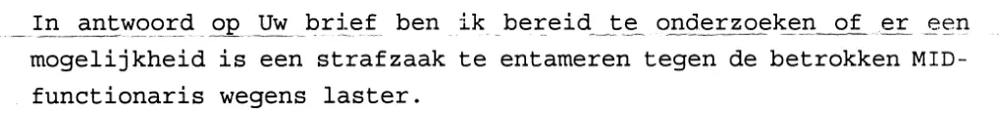

Beweisstück · Brief
Rechtsanwalt Gerard Spong an Giltay, 28. Mai 1999
Die Passage
„In Beantwortung Ihres Schreibens bin ich bereit zu prüfen, ob eine Möglichkeit besteht, ein Strafverfahren gegen die betreffende MID-Bedienstete wegen Verleumdung anzustrengen.“ Seite 1, der erste Absatz des Briefes. Aus dem Niederländischen übersetzt; der Originaltext steht unten.
Originaltext
“In antwoord op Uw brief ben ik bereid te onderzoeken of er een mogelijkheid is een strafzaak te entameren tegen de betrokken MID-functionaris wegens laster.” Der Brief schließt mit dem getippten Namen „G. Spong“; die Unterschrift darüber ist im Scan geschwärzt.

Warum dieses Dokument wichtig ist
Am 28. Mai 1999 schreibt Rechtsanwalt Gerard Spong an Giltay, dass er bereit ist zu prüfen, ob ein Strafverfahren wegen Verleumdung gegen die betreffende MID-Bedienstete eingeleitet werden kann. Dem Essay zufolge wollte Giltay auf Anraten von Spong strafrechtlich gegen die Äußerungen über ihn vorgehen. Als Giltay im Juli 1999 daraufhin Anzeige erstatten wollte, weigerte sich die Den Haager Polizei laut dem Buch (englische Ausgabe, S. 66), sie aufzunehmen.
Herkunft
- Dokument
- Brief
- Absender
- Wladimiroff & Spong, Rechtsanwälte, Eisenhowerlaan 102, Den Haag; unterzeichnet von G. Spong
- Empfänger
- E.F. Giltay, Den Haag
- Datum
- 28. Mai 1999
- Geschäftszeichen
- Giltay/Advies · SP/
- Betreff
- Ob ein Strafverfahren wegen Verleumdung gegen die betreffende MID-Bedienstete eingeleitet werden kann
- Sprache
- Niederländisch
- Aufbewahrt bei
- Archiv des Autors
- Siehe auch
- Chef des Polizeidistrikts an Giltay, 26. März 2000
Zitiert in: dem Essay „Das Verbot fiel, das Buch hielt stand“ im Kapitel (3) „Was das Buch enthüllt: die Srebrenica-Vertuschung“.
Beweiskarte: https://
Dokument: https://
Zuletzt geändert am 13. September 2026, abgerufen am 3. Oktober 2026.

Diese Seite ist ein Beweisstück zum Buch Der Cover-up-General von Edwin Giltay und zur dazugehörigen Website.